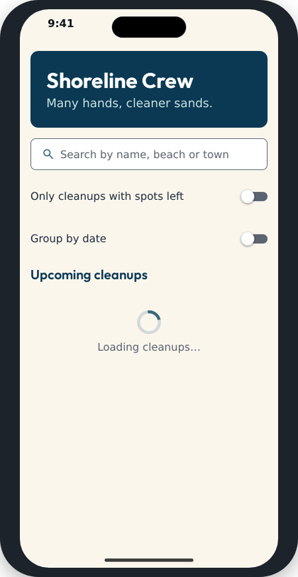

React Native & Expo · Part 1 · Session 8 of 26 · 3 hours
Session 8
FlatList, SectionList and Big Lists
A real list, a fast list, and the project that closes Part 1.
Today
Three hours, two lessons and a kickoff
| 0:00 | Warm-up: Lesson 2.5 in three questions |
| 0:10 | 3.1 FlatList and SectionList: model, demo, lab, project |
| 1:00 | Break (10 min) |
| 1:10 | 3.2 Big Lists, Fast: model, demo, lab, project |
| 2:00 | Part 1 project kickoff: Fix-It Tables |
| 2:50 | Exit ticket, homework, bring list |
LABS Labs in
labs/module-08; the project in labs/projects/.Warm-up · 6 minutes
Lesson 2.5 in three questions
backgroundColor: lightColors.pagein a style sheet: dark mode?- When is
Platform.OSthe right tool? - Where does the 2 in two columns come from?
3.1
FlatList and SectionList
The list draws what is near the screen.
3.1 · Mental model
The sign-in table
- The roster is complete all day: your data
- Tags for the people in line: the drawn rows
- Old pages put away: rows far behind are thrown away
- An ID that does not depend on the line: the key
3.1 · Measured
1,000 rows, opened at phone size
- ScrollView + map: 1,000 drawn
- FlatList: 358 drawn
- FlatList at the end: 400
- windowSize 21: ten screens each way
- More as you scroll
- A row thrown away is drawn again from data
WHY A list component for anything that comes from data.
3.1 · The finished list
FlatList, prop by prop
shoreline-crew/src/app/index.tsx
key={columns}
data={cards}
keyExtractor={(card) => card.event.id}
renderItem={renderCard}
numColumns={columns}
columnWrapperStyle={grid ? styles.row : undefined}
ListHeaderComponent={header}
ListEmptyComponent={empty}
refreshing={refreshing}
onRefresh={refresh}
3.1 · Live demo
A key that is not a string
npx tsc --noEmit
src/app/index.tsx:178:7 - error TS2322: Type '(card: Card) => number' is not assignable to type '(item: Card, index: number) => string'.
Type 'number' is not assignable to type 'string'.
178 keyExtractor={(card) => card.event.capacity}
~~~~~~~~~~~~
…
Found 1 error in src/app/index.tsx:178
WHY Read the second line. The fix is in your file: card.event.id.
3.1 · Live demo
A header made inside the screen
ListHeaderComponent={() => <TextInput … />} // typed: lo
expect(instance).toHaveDisplayValue() Expected instance to have display value: lo Received:
WATCH A new component every render: a new field. Pass an element.
3.1 · Live demo
numColumns without a key
numColumns={columns} // 1, then 2
Invariant Violation: Changing numColumns on the fly is not supported. Change the key prop on FlatList when changing the number of columns to force a fresh render of the component.
WATCH tsc and the linter: silent. The fix:
key={columns}.3.1 · Empty is several states
Loading, failed, nothing matches

3.1 · Pull to refresh
refreshing + onRefresh
refreshingtrue while it runs; false on success AND failure- iOS: a spinner above the list; Android: a round arrow
- The web preview: no gesture (a plain View)
- So: a Refresh button when
Platform.OSis web
PHONE Pull it on a phone in Expo Go.
3.1 · SectionList
Items under sticky headings

3.1 · Guided lab · 15 minutes
The beaches as a list
labs/module-08/l3_1-flatlist-and-sectionlist/starternpm test: seven failures; Task 1's two first- Task 1: the header as an element, and key={columns}
- Done:
Tests: 7 passed, 7 total
MORE Finished? Task 2 (three empties), Task 3 (towns).
3.1 · Project
The Cleanups List: Steps 1 and 2
useScreenScrollin Screen.tsx- LoadingView, ErrorView, EmptyState
npx tsc --noEmit: silent after each- Steps 3 to 7 at home (lesson-09-end has the answer)
10
Break
Back at 1:10.
3.2
Big Lists, Fast
Measure, then recycle.
3.2 · Mental model
The bucket pile
- A bucket comes back; the next volunteer takes it: recycling
- Separate piles for separate jobs:
getItemType - Empty the bucket first:
useRecyclingState - Nobody buys a new bucket per person
3.2 · The lesson's lab, 1,000 rows
Rows created during the scroll test
- FlatList: 5,614 to 7,895
- FlashList: 39
- Full speed: both near 60 fps
- CPU 6x slower: FlatList 42 to 48
- Your numbers will differ
- The web preview counts
- It cannot speak for a phone
- Real phone + release build: final word
WHY The course measured three runs each. Do not run it live: it takes minutes.
3.2 · Live demo
The paging headers
curl -s -D - -o /dev/null "http://localhost:4000/api/events?when=upcoming&page=2&perPage=5"
HTTP/1.1 200 OK content-type: application/json; charset=utf-8 x-total-count: 8 x-total-pages: 2 …
WHY x-total-pages says when to stop (the Link and Date lines left out).
3.2 · Paging that ships
Three rules
- Ask once: only when
more.statusis idle - Stop after a failure: only Try again asks
- Never twice: drop the ids you already have
WATCH Otherwise: hundreds of requests on one bar of signal.
3.2 · The finished code
onEndReached asks only when idle
shoreline-crew/src/app/index.tsx
function onEndReached() { if (more.status === 'idle') { loadNextPage(); } }
3.2 · Live demo
A FlatList-only prop
npx tsc --noEmit
src/app/index.tsx:221:9 - error TS2322: Type '{ data: …; … 16 more …; }' is not assignable to type 'IntrinsicAttributes & FlashListProps<SectionRow<Card>> & { ref?: Ref<FlashListRef<SectionRow<Card>>> | undefined; }'.
Property 'columnWrapperStyle' does not exist on type 'IntrinsicAttributes & FlashListProps<SectionRow<Card>> & { ref?: Ref<FlashListRef<SectionRow<Card>>> | undefined; }'.
221 columnWrapperStyle={styles.cell}
~~~~~~~~~~~~~~~~~~
Found 1 error in src/app/index.tsx:221
WHY Skip the first line. The second names it.
3.2 · Recycled state
Cards that forget
shoreline-crew/src/components/EventCard.tsx
// Like useState, but back to false when this card is reused for another cleanup (FlashList // recycles cards as you scroll): an open card never hands its open details to the next one const [showDetails, setShowDetails] = useRecyclingState(false, [event.id]);
WATCH No tool warns about the useState version: open one, scroll, look.
3.2 · Footers
A failed page

3.2 · One list
Headings across both columns

3.2 · Guided lab · 15 minutes
Past cleanups, three at a time
labs/module-08/l3_2-big-lists-fast/starter- Task 1: a recycled row keeps the old report open
- Task 2: read the
askedarrays: ask once, never twice - Done:
Tests: 6 passed, 6 total
MORE Finished? Task 3: month headings in one FlashList.
3.2 · Project
A Fast, Paged Cleanups List: Steps 1 and 3
npx expo install @shopify/flash-list- 2.3.2, no ^, JavaScript only: Expo Go runs it
SectionRowandflattenSections- Step 2's lab and Steps 4 to 7 at home
P1
Fix-It Tables
The Part 1 project, for the Alder Row Repair Café.
Part 1 project · The client
The Alder Row Repair Café
- Volunteer fixers at four tables, once a month
- Neighbors bring broken things; each gets a numbered tag
- Today: a clipboard. Wanted: the queue on a phone
- Search, hide finished, group by table, dark mode, Mark fixed
SCOPE Local data, no API, no install: Part 1 only.
Part 1 project · What you write
TODO A to D
- A
src/types.ts: unions, the exact Ticket - B
src/utils/tickets.ts: labels and rules - C
TicketCard.tsx: the card, the toggle - D
src/app/index.tsx: the list screen
Part 1 project · The rubric
Six rows, 0 / 1 / 2: complete = no row at 0
- 1. Types and data
- 2. Components and layout
- 3. Touch and input
- 4. The themed list
- 5. Accessibility and the phone
- 6. Checks and explanation
RUBRIC The final project's scale (Lesson 10.1).
Part 1 project · Setup
The starter, as shipped
npm test npm run typecheck
Tests: 13 failed, 13 total src/types.check.ts:5:1 - error TS2578: Unused '@ts-expect-error' directive. src/types.check.ts:8:1 - error TS2578: Unused '@ts-expect-error' directive.
WHY The type tests pass only when the unions are exact. Never edit them.
Part 1 project · The week
Milestones
- Session 8 (kickoff, in the room): the folder copied and
npm testrun; TODO A done (npm run typecheckclean of TS2578); TODO B started - Before Session 9 (at home, 2 to 3 hours): TODO B and C done; TODO D's FlatList with the header element and the count
- Session 9 (check-in and demo): TODO D close: empty state, Mark fixed, two columns; the grouped view may still be open
- One week after Session 9 (hand-in): every test,
npm run typecheck,npm run lintand the web export pass; the journal entry from TASKS.md
Wrap-up · 4 minutes
Exit ticket
- Why must a key come from the data, not the position?
- The three rules of infinite scroll?
- Which TODO of Fix-It Tables first, and what is done?
WHY No notes. Workbook or a sticky note.
Before Session 9
Homework and bring list
- Both lesson projects; exercises; quizzes; journals
- Labs: the remaining tasks
- Fix-It Tables: TODO B and C, TODO D started
- Bring: the project running, the practical installed, a demo plan
NEXT Session 9: the check-in, the demos, the Part 1 assessment.